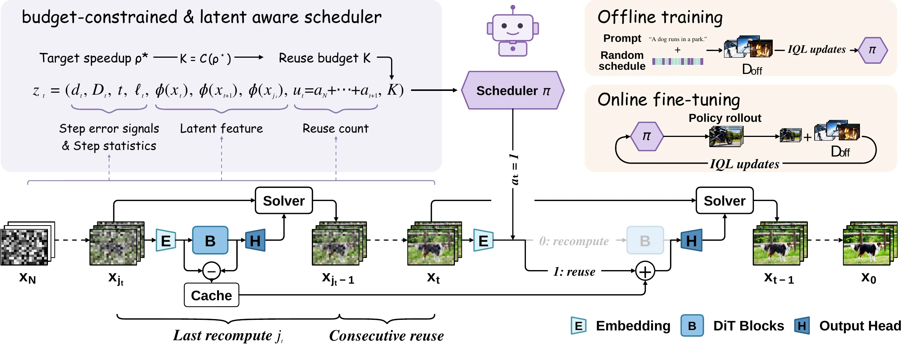
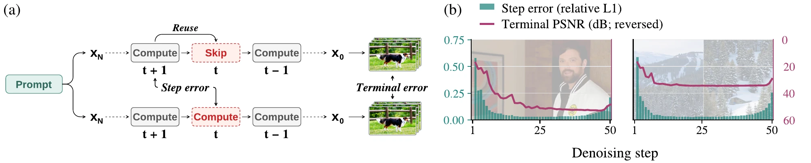
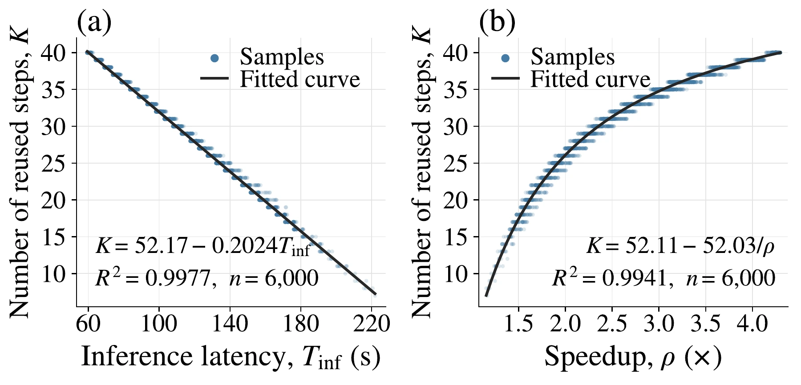
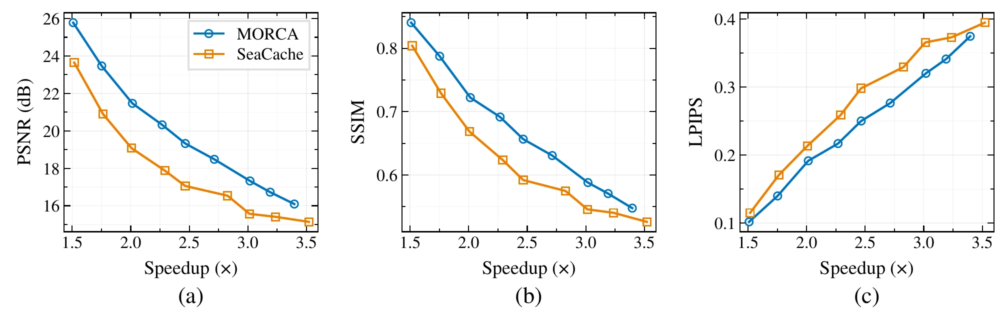
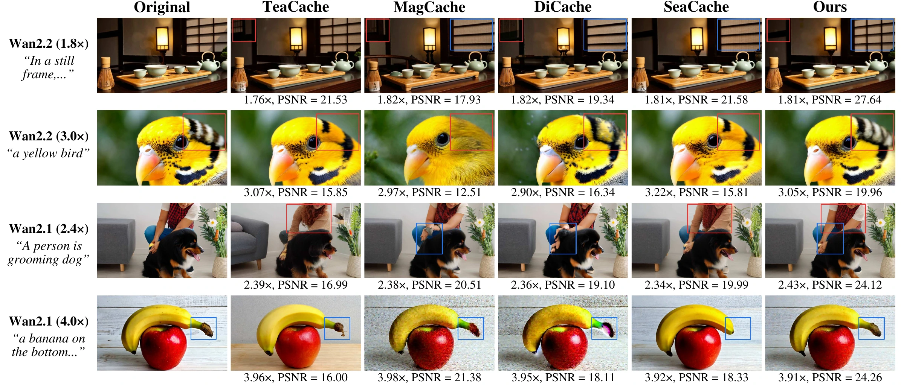

Wan2.2 · 1.8× target
Prompt: In a still frame, amidst the hushed ambiance of the traditional tea room, a meticulously arranged tea set awaited, with porcelain cups, a bamboo whisk

MORCA is a cache scheduling framework for accelerating video diffusion models. At each denoising step, a lightweight, latent-aware scheduler decides whether to reuse cached outputs from earlier timesteps or recompute, under a reuse budget derived from the user-specified target speedup. The scheduler is first trained offline on pre-collected trajectories and then refined through online reinforcement learning.
Diffusion Transformers (DiTs) achieve remarkable performance in video synthesis, but their iterative denoising process suffers from high inference latency. To address this, caching has emerged as an effective acceleration strategy by capitalizing on inter-step redundancy during denoising. Existing dynamic caching methods typically estimate the error that cache reuse would introduce at each denoising step (step error) to guide cache decisions, whereas our concern is how much quality loss cache reuse would cause in the final generated video (terminal error). We show that step error does not directly correspond to terminal error and that latent information helps capture their relationship, thereby informing cache decisions. Moreover, existing threshold-based methods cannot provide precise speedup control, making it difficult to meet practical requirements for user-specified acceleration targets. To address these limitations, we introduce MORCA, a cache scheduling framework trained through offline-to-online reinforcement learning to make latent-aware reuse/recompute decisions under user-specified acceleration targets. Extensive experiments on different video generation models across multiple target acceleration ratios demonstrate that MORCA achieves better generation fidelity than state-of-the-art caching methods under comparable computational budgets.
Existing dynamic caching methods use step error—the immediate error introduced by cache reuse—to guide their decisions. Our goal, however, is to minimize terminal error: the quality loss in the final generated video.

At each step, we compare reusing the previous step’s cached residual with recomputing the DiT blocks, while computing all other steps normally. Step error is the relative L1 difference between the cached and recomputed residuals; terminal error is assessed using the resulting video’s PSNR relative to the no-cache reference.
Step error does not directly correspond to terminal error. On Wan2.1, step error follows similar patterns across prompts, while the resulting terminal error varies substantially. A local error signal alone is therefore insufficient to guide decisions about final video quality.
Latent information helps bridge this gap. Adding lightweight latent features to a step-error-based predictor reduces terminal-error prediction RMSE from 6.971 to 2.849 dB and raises Spearman correlation from 0.5288 to 0.9357. This motivates a latent-aware scheduler that learns cache decisions from a terminal-quality reward.
Cache-based inference either recomputes the DiT blocks and refreshes the cached residual, or skips the blocks and adds the cached residual to the current input embedding. MORCA builds on SeaCache’s caching granularity and reuse strategy, replacing its threshold-based decision rule with a learned scheduler.
We formulate cache scheduling as a sequential decision problem with a terminal reward based on video PSNR. The target speedup is mapped to a reuse budget. Augmenting the state with budget information and restricting feasible actions ensures that the prescribed reuse budget is met.
The lightweight scheduler combines step-error proxies and related statistics, compact features from the current, previous, and most recently recomputed latents, and reuse-budget information. These inputs help it account for the effect of each cache decision on final video quality.

Speedup–reuse calibration maps a user-specified acceleration target to a reuse budget.
Offline training. We collect trajectories using randomly sampled cache schedules across prompts and target speedups, then use Implicit Q-Learning (IQL) to learn an initial scheduler from this pre-collected dataset.
Online fine-tuning. Starting from the offline-trained scheduler, we collect new trajectories with the current policy and add them to a replay buffer alongside offline and earlier online data. A short critic warm-up is followed by joint value-function and policy updates using the same IQL procedure, enabling further exploration and policy improvement.

Speed–quality comparisons on Wan2.2. MORCA achieves better generation fidelity at comparable speedups.
Visual comparisons with existing caching methods. Differences in structure and fine details are highlighted in the boxed regions.
Video comparisons from the main paper. Original is the no-cache reference. Use the group controls to compare motion across methods.
Prompt: In a still frame, amidst the hushed ambiance of the traditional tea room, a meticulously arranged tea set awaited, with porcelain cups, a bamboo whisk
Prompt: a yellow bird
Prompt: A person is grooming dog
Prompt: a banana on the bottom of an apple, front view

Qualitative comparison with baselines. Differences are highlighted in the boxed regions.